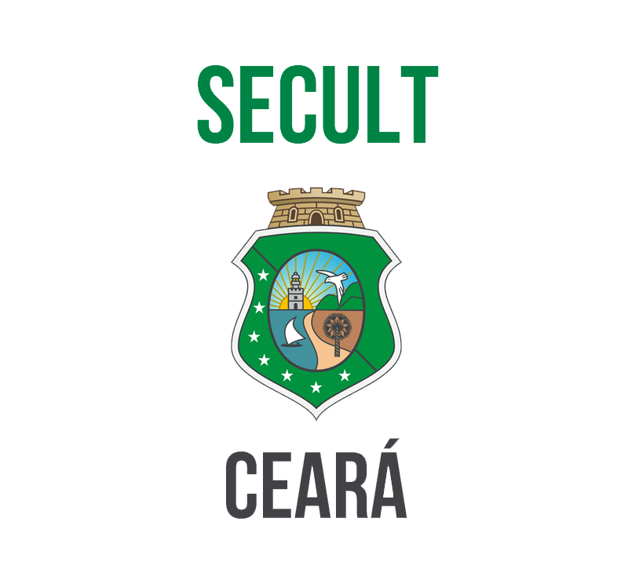

Já fui monitor de Matemática.

Universidade Federal do Ceará
Funções diversas para a Coordenadoria de Comunicação Social e Marketing Institucional - CCSMI.
PIBITI
Bolsista de Iniciação em Desenvolvimento Tecnológico e Inovação - PIBITI para o Desenvolvimento e Validação de um pocket guide sobre a EAD online e suas ferramentas em formato de aplicativo móvel.

Secretaria da Cultura do Estado do Ceará
Desenvolvimento e Suporte das Plataformas Digitais do Programa Agentes de Leitura